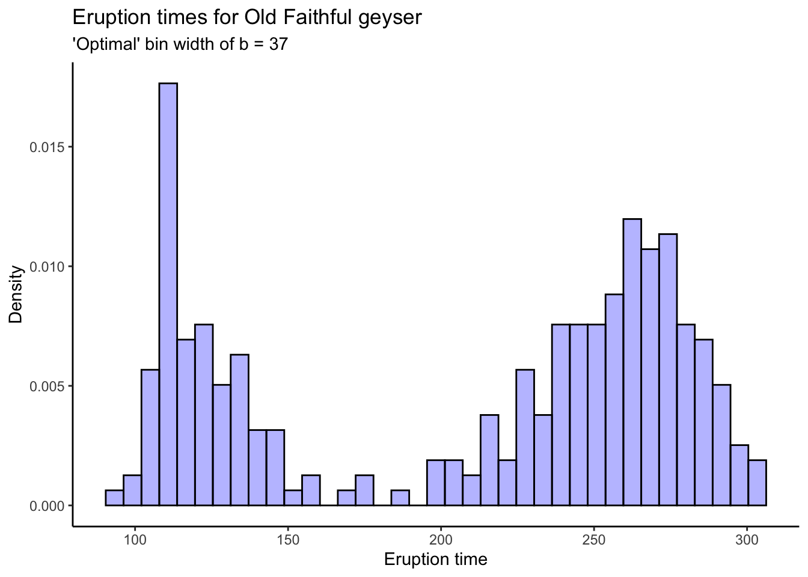
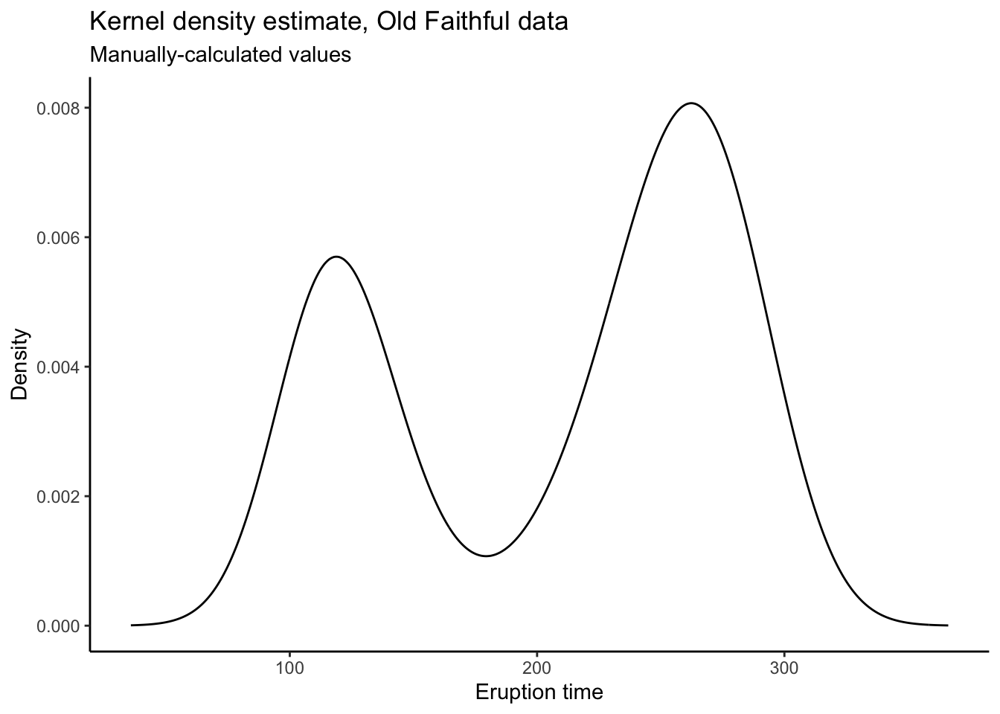
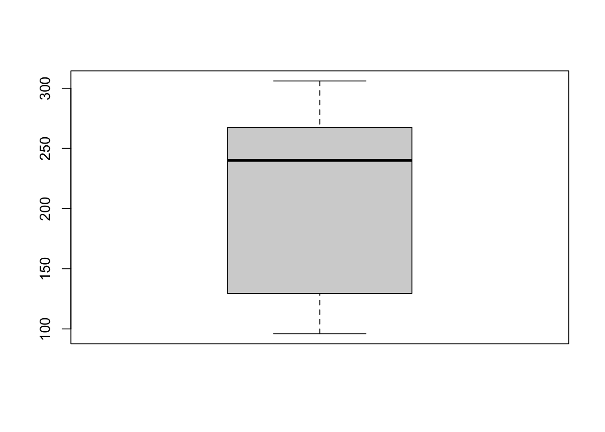
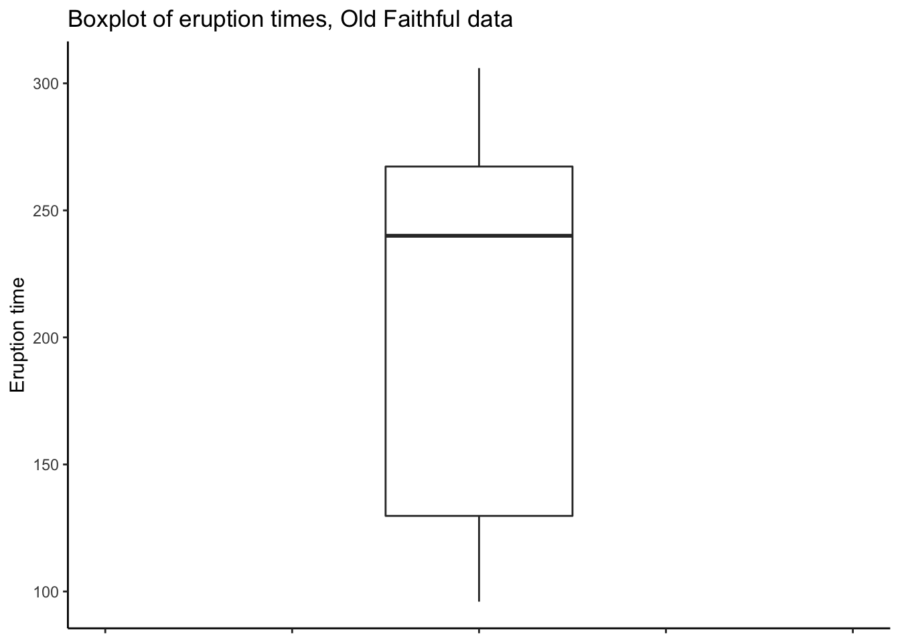
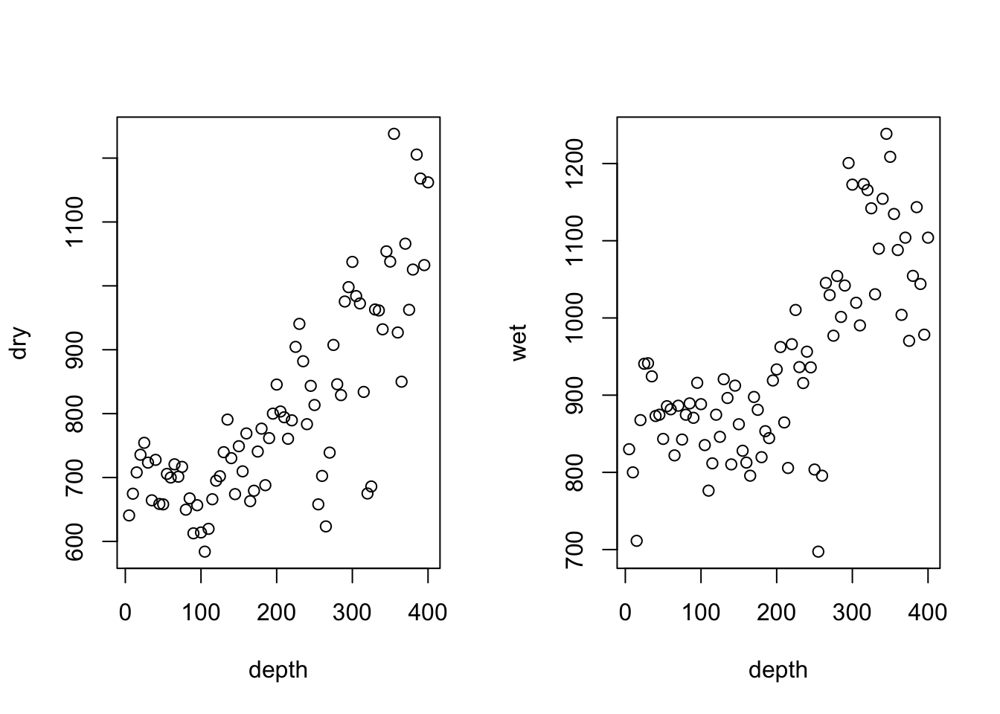
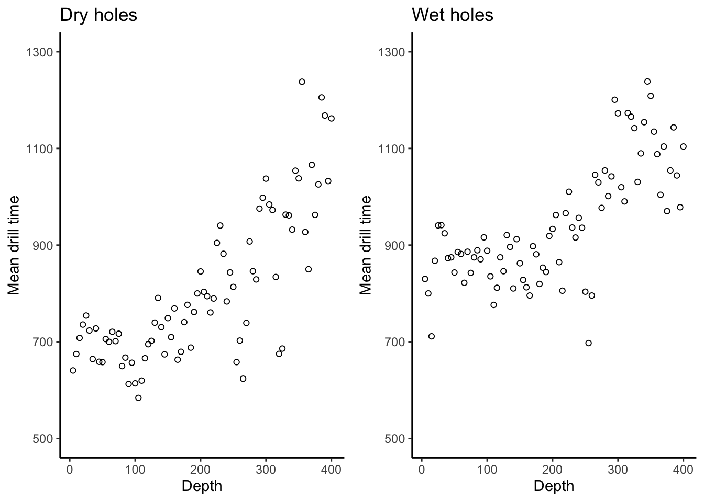
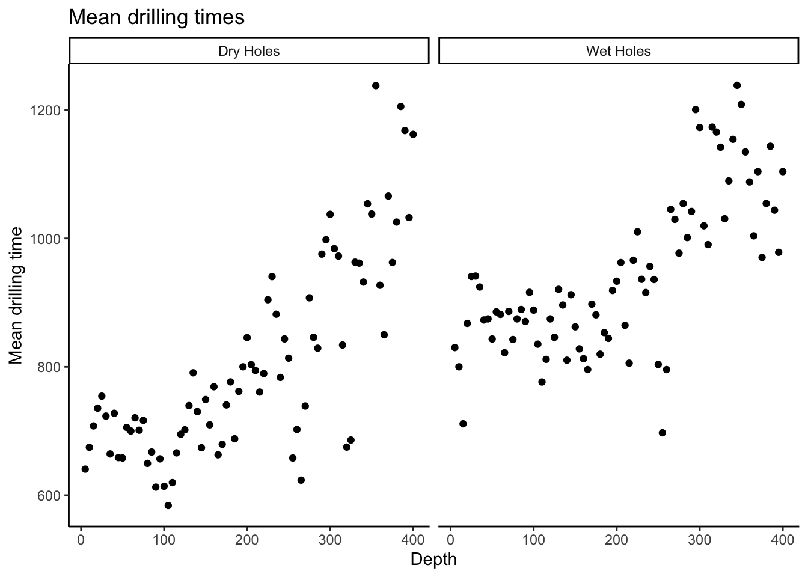
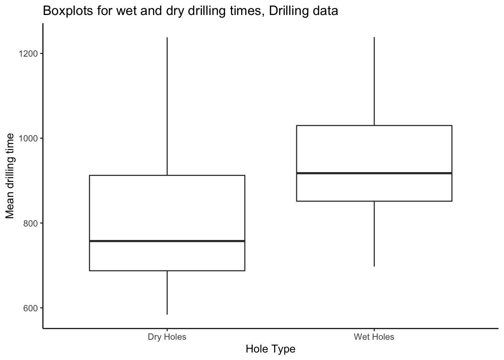
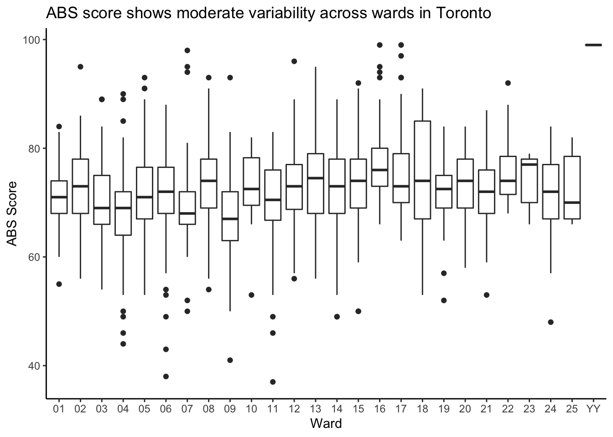
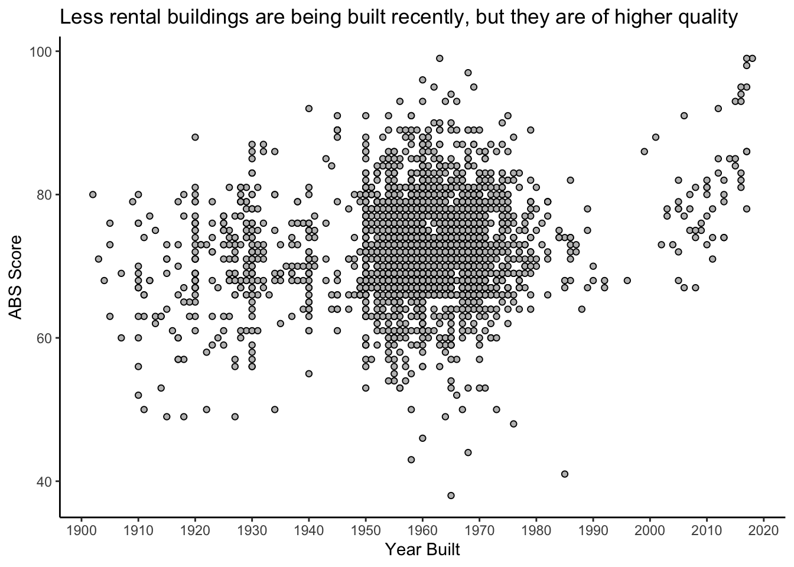

Chapter 2 Introduction to Data Analysis: Data Input and Basic Summaries
This chapter shows you how to read in simple datasets and make simple numerical and graphical summaries of them. We’ll use data from the book A Modern Introduction to Probability and Statistics (MIPS) which can be found here: https://www.tudelft.nl/en/eemcs/the-faculty/departments/applied-mathematics/applied-probability/education/mips/. This will be referred to as “the book data folder.” This chapter corresponds to Chapters 15 and 16 in MIPS.
2.1 Old Faithful
The Old Faithful data is stored in the oldfaithful.txt file in the book data
folder. To read it in to R, first you need to look at its contents.
2.1.1 Read in the data
You can either open it in a text editor (since it’s small), or print out the first few lines on the command line. The latter is nicer: the data is printed properly, without added bits from notepad or whatever; and if you’re working with large data stored in big text files, trying to open the whole thing in an editor will crash your computer. It’s good to get in the habit of working a bit on the command line now.
If you have a Mac or Linux-based system, open a terminal. If you have a Windows based system, get a Mac or Linux. Just kidding (not really though). Download Git Bash: https://git-scm.com/download/win and open a new terminal window.
You can also use the terminal within RStudio by clicking on “Terminal” in the toolbar above the console (the console is where the code is run).
To look at a text file on the command line, use the head command. You have to
tell it where to look on your computer. You can navigate to the folder where the
data is stored and just type the name of the file, or you can type a whole filepath,
or a relative filepath. Right now, I am in the working directory for this book,
and relative to this location, the data is stored in data/MIPSdata.
If you are
not in this directory, you have to navigate there. The pwd command tells you
where you are, the ls -l command tells you what’s there, and the cd command
lets you change to a new directory. So if you’re in /home/alex, you would type
pwd and it would print /home/alex. If this location contains a folder called
data, you can type ls -l and there should be a list of stuff, including a folder
called data. You can type cd data to go there, and repeat the process. Navigate
to where you downloaded the data to– it’s kind of like a game. A really, really repetative game.
Anyways, once you’re there, type:
head data/MIPSdata/oldfaithful.txt216
108
200
137
272
173
282
216
117
261 A column of numbers is printed. This indicates that the text file oldfaithful.txt
contains a single column of numbers, and no header row. A header row is what it’s
called when the first row of the dataset contains the names of the columns.
To read such a dataset into R, we’ll use the read_csv function in the readr
package. The readr package is automatically loaded when we load the tidyverse
package. If this sentence is confusing (no worries!) I recommend you check out
my R tutorial.
We’ll just do that:
library(tidyverse)
oldfaithful <- readr::read_csv(
file = "data/MIPSdata/oldfaithful.txt", # Tell it where the file is
col_names = "time", # Tell it that the first row is NOT column names, and at the same time, tell it what name you want for the column.
col_types = "n" # Tell it that there is one column, and it is "numeric" (n)
)
# Check what was read in using the dplyr::glimpse() function
dplyr::glimpse(oldfaithful)Rows: 272
Columns: 1
$ time [3m[38;5;246m<dbl>[39m[23m 216, 108, 200, 137, 272, 173, 282, 216, 117, 261, 110, 235, 252, 105, 282, 130, 105, 288, 96, 255, 108, 105, 207, 184, 272, 216, 118, 245, 231, 266, 258, 268, 202, 242, 230, 121, 112, 290, 110…By glimpseing the data, we see that the format matches what we saw in the raw
file, and we are given the number of rows too. Check that the number of rows matches
what was in the raw file by printing out the number of rows on the command line
using the wc -l command (“wc” = “word count” and “-l” means count “lines”):
wc -l data/MIPSdata/oldfaithful.txt 271 data/MIPSdata/oldfaithful.txtWhat happened, why don’t they match? They do. The wc -l command actually counts
the number of “newline” characters in the file. It is customary to end a data file
with a newline character. This file doesn’t, though. How do I know? Type the following:
tail data/MIPSdata/oldfaithful.txt111
255
119
135
285
247
129
265
109
268 This prints out the last few lines of the file. In this book, these are printed
as normal. But if you do it on the command line, you’ll see that the command
prompt gets printed on the same line as the final number, 268. This indicates
that the file does not end with a newline character, and hence the total number
of newlines in the file is 271, corresponding to 272 actual lines of data.
Remark: subtle issues like this come up all the time in data analysis. The only way to get good at it is practice. It might seem silly to focus on such a seemingly insignificant detail in an introductory chapter on the basics of data analysis. But catching and fixing seemingly insignificant details is a major part of the job and you have to get practice at it.
2.1.2 Graphical Summaries
Now that the data has been read in and checked, we can make summaries of it.
Histograms
# Tabular display
print(oldfaithful$time) [1] 216 108 200 137 272 173 282 216 117 261 110 235 252 105 282 130 105 288 96 255 108 105 207 184 272 216 118 245 231 266 258 268 202 242 230 121 112 290 110 287 261 113 274 105 272 199 230 126 278 120
[51] 288 283 110 290 104 293 223 100 274 259 134 270 105 288 109 264 250 282 124 282 242 118 270 240 119 304 121 274 233 216 248 260 246 158 244 296 237 271 130 240 132 260 112 289 110 258 280 225 112 294
[101] 149 262 126 270 243 112 282 107 291 221 284 138 294 265 102 278 139 276 109 265 157 244 255 118 276 226 115 270 136 279 112 250 168 260 110 263 113 296 122 224 254 134 272 289 260 119 278 121 306 108
[151] 302 240 144 276 214 240 270 245 108 238 132 249 120 230 210 275 142 300 116 277 115 125 275 200 250 260 270 145 240 250 113 275 255 226 122 266 245 110 265 131 288 110 288 246 238 254 210 262 135 280
[201] 126 261 248 112 276 107 262 231 116 270 143 282 112 230 205 254 144 288 120 249 112 256 105 269 240 247 245 256 235 273 245 145 251 133 267 113 111 257 237 140 249 141 296 174 275 230 125 262 128 261
[251] 132 267 214 270 249 229 235 267 120 257 286 272 111 255 119 135 285 247 129 265 109 268# Ugly! You can use the View() function to open the data in a spreadsheet
# Not run:
# View(oldfaithful)
# Histogram using base R
hist(oldfaithful$time)
# Base R graphics are outdated. Use ggplot2, which is loaded automatically with the tidyverse:
oldfaithful %>%
ggplot(aes(x = time)) +
theme_classic() +
geom_histogram(aes(y = ..density..),bins = 30,colour = "black",fill = "blue",alpha = .3) +
labs(title = "Eruption times for Old Faithful geyser",
x = "Eruption time",
y = "Density")
# Try different numbers of bins and you might see different patterns. Do you think this is a
# good or bad thing, or both?
# Their "optimal" bin width:
s <- sd(oldfaithful$time)
n <- nrow(oldfaithful)
b <- (24*sqrt(pi))^(1/3) * s * (n^(-1/3))
b[1] 36.897oldfaithful %>%
ggplot(aes(x = time)) +
theme_classic() +
geom_histogram(aes(y = ..density..),bins = round(b),colour = "black",fill = "blue",alpha = .3) +
labs(title = "Eruption times for Old Faithful geyser",
subtitle = stringr::str_c("'Optimal' bin width of b = ",round(b)),
x = "Eruption time",
y = "Density")
Kernel Density Estimates
To get kernel density estimates, there are a couple different ways. The density
function in R does the math for you, using a Gaussian kernel (the functions \(K_{i}\)
are taken to be Gaussian density functions with mean and standard deviation
determined by the data). You can plot the output of density using base R or
ggplot. You can also use the ggplot geom_density function to do something
similar automatically.
# Kernel density estimation in R
dens <- density(oldfaithful$time)
dens
Call:
density.default(x = oldfaithful$time)
Data: oldfaithful$time (272 obs.); Bandwidth 'bw' = 20.09
x y
Min. : 35.7 Min. :3.80e-06
1st Qu.:118.4 1st Qu.:8.57e-04
Median :201.0 Median :2.41e-03
Mean :201.0 Mean :3.02e-03
3rd Qu.:283.6 3rd Qu.:5.14e-03
Max. :366.3 Max. :8.07e-03 plot(dens)
# Okay... ggplot?
tibble(x = dens$x,y = dens$y) %>%
ggplot(aes(x = x,y = y)) +
theme_classic() +
geom_line() +
labs(title = "Kernel density estimate, Old Faithful data",
subtitle = "Manually-calculated values",
x = "Eruption time",
y = "Density")
# Can also do automatically:
oldfaithful %>%
ggplot(aes(x = time)) +
theme_classic() +
geom_density() +
labs(title = "Kernel density estimate, Old Faithful data",
subtitle = "Automatically-calculated values",
x = "Eruption time",
y = "Density")
# The reason to manually calculate the values is because you have more control.
# I don't know what's happening at the endpoints there, and it's too much work
# to go and figure out how to make ggplot not do that.
# When you calculate the plotting values yourself and then put them into ggplot,
# you have total control!Empirical Distribution Function
For the empirical distribution function, we use the ecdf function in R. You
would think this function should behave in a similar manner to the density function,
but it doesn’t. It returns a function which computes the ecdf. It still has a plot
method, but to use it with ggplot we have to use stat_function:
faithful_ecdf <- ecdf(oldfaithful$time)
plot(faithful_ecdf)
# ggplot
tibble(x = c(100,300)) %>% # Tell ggplot we want to plot the ecdf from 100 to 300
ggplot(aes(x = x)) +
theme_classic() +
stat_function(fun = faithful_ecdf) +
labs(title = "Empirical CDF for Old Faithful Eruption Times",
x = "Eruption Time",
y = "Empirical probability that an eruption time is less than x")
Advanced: the CDF is the integrated pdf: \[ F(x) = \int_{-\infty}^{x}f(s)ds \] So why don’t we integrate the kernel density estimate to get the empirical CDF? One of the great benefits of taking a computation-forward approach to statistical inference is that we can “shoot first and ask questions later”- just try it, and then (maybe) use math to explain the results.
Here is the world’s most naive numerical integration-based estimate of a CDF:
tibble(
x = dens$x[-1],
y = cumsum(dens$y[-1]) * diff(dens$x) # Quick and dirty numerical integration. Can you put something better?
) %>%
ggplot(aes(x = x,y = y)) +
theme_classic() +
geom_line() +
labs(title = "Numerical integration-based empirical CDF for Old Faithful data",
x = "Eruption time",
y = "Empirical probability that an eruption time is less than x")
What do you think? Is this better, worse, or just different than the ECDF?
Boxplots
To get a boxplot, again, you can use base R or ggplot.
We have:
# Base R
boxplot(oldfaithful$time)
# ggplot
oldfaithful %>%
ggplot(aes(y = time)) +
theme_classic() +
geom_boxplot(width = .1) +
labs(title = "Boxplot of eruption times, Old Faithful data",
y = "Eruption time") +
# Have to play around with the x axis to get it to look nice *shrug*
coord_cartesian(xlim = c(-.2,.2)) +
theme(axis.text.x = element_blank())
2.1.3 Numerical Summaries
A numerical summary is any number or numbers you calculate from the data. The basic numerical summaries of interest include the sample mean and median, sample standard deviation and mean absolute deviation, and quantiles.
# Mean
mean(oldfaithful$time)[1] 209.27# Median
median(oldfaithful$time)[1] 240# Standard deviation
sd(oldfaithful$time)[1] 68.483# Quantiles: tell it which ones you want. I want 0, 25, 50, 75, 100
quantile(oldfaithful$time,probs = c(0,.25,.50,.75,1.00)) 0% 25% 50% 75% 100%
96.00 129.75 240.00 267.25 306.00 # The zeroth and hundredth quantiles are the sample minimum and maximum:
min(oldfaithful$time)[1] 96max(oldfaithful$time)[1] 306# Actually, you can get all this with the summary() function:
summary(oldfaithful$time) Min. 1st Qu. Median Mean 3rd Qu. Max.
96 130 240 209 267 306 # Mean absolute deviation
# I don't know an R function for this off the top of my head (maybe you can find one?)
# So let's calculate it manually.
# Actually, let's calculate them ALL manually!
# Mean:
sum(oldfaithful$time) / length(oldfaithful$time)[1] 209.27# Median: it's the 50th percentile
quantile(oldfaithful$time,probs = .5)50%
240 # Can get it manually too:
sort(oldfaithful$time)[length(oldfaithful$time)/2][1] 240# Better to use the quantile() function though.
# Standard deviation. Need to save the mean to a variable first:
mn <- mean(oldfaithful$time)
sqrt( sum( (oldfaithful$time - mn)^2 ) / ( length(oldfaithful$time) - 1 ) )[1] 68.483# MAD. Similar to sd:
md <- median(oldfaithful$time)
median( abs(oldfaithful$time - md) )[1] 38.5# IQR:
quantile(oldfaithful$time,probs = .75) - quantile(oldfaithful$time,probs = .25) 75%
137.5 # Note that there are various ways to correct for the fact that not all quantiles
# are exact (you may not have a datapoint which has EXACTLY 25% of the data below it,
# like if the sample size isn't divisible by 4). R probably uses a different method
# than the book, so the results here are slightly different.2.2 Drilling
The drilling data containg more than one variable
and so are ideal for illustrating summaries of data
containing more than one variable.
2.2.1 Read in data
Read in the drilling.txt file:
head data/MIPSdata/drilling.txt5 640.67 830
10 674.67 800
15 708 711.33
20 735.67 867.67
25 754.33 940.67
30 723.33 941.33
35 664.33 924.33
40 727.67 873
45 658.67 874.67
50 658 843.33# Use the read_tsv (not csv), because this file is "tab-delimited"; the spaces
# between columns contain tab characters.
drilling <- readr::read_tsv(
file = "data/MIPSdata/drilling.txt",
col_names = c("depth","dry","wet"),
col_types = "nnn"
)
glimpse(drilling)Rows: 80
Columns: 3
$ depth [3m[38;5;246m<dbl>[39m[23m 5, 10, 15, 20, 25, 30, 35, 40, 45, 50, 55, 60, 65, 70, 75, 80, 85, 90, 95, 100, 105, 110, 115, 120, 125, 130, 135, 140, 145, 150, 155, 160, 165, 170, 175, 180, 185, 190, 195, 200, 205, 210, 2…
$ dry [3m[38;5;246m<dbl>[39m[23m 640.67, 674.67, 708.00, 735.67, 754.33, 723.33, 664.33, 727.67, 658.67, 658.00, 705.67, 700.00, 720.67, 701.33, 716.67, 649.67, 667.33, 612.67, 656.67, 614.00, 584.00, 619.67, 666.00, 695.00,…
$ wet [3m[38;5;246m<dbl>[39m[23m 830.00, 800.00, 711.33, 867.67, 940.67, 941.33, 924.33, 873.00, 874.67, 843.33, 885.67, 881.67, 822.00, 886.33, 842.50, 874.67, 889.33, 870.67, 916.00, 888.33, 835.33, 776.33, 811.67, 874.67,…2.2.2 Graphical summaries
Scatterplots
To make a scatterplot, you can again use base R or ggplot. We want separate plots
for dry and wet holes. You can do this by plotting these data separately, or you
can re-format the data and have ggplot do it automatically:
# Base R
par(mfrow = c(1,2)) # Plots on a 1 x 2 grid
plot(dry~depth,data = drilling)
plot(wet~depth,data = drilling)
# ggplot
# Two separate plots:
dryplt <- drilling %>%
ggplot(aes(x = depth,y = dry)) +
theme_classic() +
geom_point(pch = 21) + # pch=21 is the magic command to give you hollow points
labs(title = "Dry Holes",
x = "Depth",
y = "Mean drill time") +
scale_y_continuous(breaks = seq(500,1300,by = 200)) +
coord_cartesian(ylim = c(500,1300))
wetplt <- drilling %>%
ggplot(aes(x = depth,y = wet)) +
theme_classic() +
geom_point(pch = 21) + # pch=21 is the magic command to give you hollow points
labs(title = "Wet Holes",
x = "Depth",
y = "Mean drill time") +
scale_y_continuous(breaks = seq(500,1300,by = 200)) +
coord_cartesian(ylim = c(500,1300))
cowplot::plot_grid(dryplt,wetplt,nrow = 1)# There is a lot of repeated code here. For a better way to make these two
# plots, first create a base plot object and then reuse it:
drillingplt <- drilling %>%
ggplot(aes(x = depth)) +
theme_classic() +
labs(x = "Depth",
y = "Mean drill time") +
scale_y_continuous(breaks = seq(500,1300,by = 200)) +
coord_cartesian(ylim = c(500,1300))
dryplt2 <- drillingplt +
labs(title = "Dry holes") +
geom_point(aes(y = dry),pch = 21)
wetplt2 <- drillingplt +
labs(title = "Wet holes") +
geom_point(aes(y = wet),pch = 21)
cowplot::plot_grid(dryplt2,wetplt2,nrow = 1)
# Much better
# Another option is to reformat the data and create the plot
# with a single command. To do this we stack the dry and wet measurements
# on top of each other, and create a new variable which indicates whether the
# measurements are dry or wet. This is called putting the data into "long" format.
# ggplot then knows how to "facet" the plots according to this new variable.
# Check it out:
drilling_long <- drilling %>%
tidyr::pivot_longer(
dry:wet, # Gather up the columns "dry" and "wet"
names_to = "type", # Create a new column called "type" which says whether a hole is dry or wet
values_to = "time" # Create a new column called "time" with the drilling time for each hole
) %>%
dplyr::mutate(type = case_when( # Rename the type values for plotting
type == "dry" ~ "Dry Holes",
type == "wet" ~ "Wet Holes"
))
dplyr::glimpse(drilling_long)Rows: 160
Columns: 3
$ depth [3m[38;5;246m<dbl>[39m[23m 5, 5, 10, 10, 15, 15, 20, 20, 25, 25, 30, 30, 35, 35, 40, 40, 45, 45, 50, 50, 55, 55, 60, 60, 65, 65, 70, 70, 75, 75, 80, 80, 85, 85, 90, 90, 95, 95, 100, 100, 105, 105, 110, 110, 115, 115, 1…
$ type [3m[38;5;246m<chr>[39m[23m "Dry Holes", "Wet Holes", "Dry Holes", "Wet Holes", "Dry Holes", "Wet Holes", "Dry Holes", "Wet Holes", "Dry Holes", "Wet Holes", "Dry Holes", "Wet Holes", "Dry Holes", "Wet Holes", "Dry Hole…
$ time [3m[38;5;246m<dbl>[39m[23m 640.67, 830.00, 674.67, 800.00, 708.00, 711.33, 735.67, 867.67, 754.33, 940.67, 723.33, 941.33, 664.33, 924.33, 727.67, 873.00, 658.67, 874.67, 658.00, 843.33, 705.67, 885.67, 700.00, 881.67,…drilling_long %>%
ggplot(aes(x = depth,y = time)) +
theme_classic() +
facet_wrap(~type) +
geom_point() +
labs(title = "Mean drilling times",
x = "Depth",
y = "Mean drilling time")
# Even though there is more overhead with this method, I recommend it because
# it scales to more variables. If you wanted to make 20 plots, you'd have to
# have 20 plots in the previous method but here, the code is actually identical.To make boxplots, transform the data in the same way as for the side-by-side
scatterplots, and give to ggplot:
drilling_long %>%
ggplot(aes(x = type,y = time)) +
theme_classic() +
geom_boxplot() +
labs(title = "Boxplots for wet and dry drilling times, Drilling data",
x = "Hole Type",
y = "Mean drilling time")
2.2.3 Numerical summaries
We can compute numerical summaries of drilling times in the same way as for the eruption times from the Old Faithful data. However, the drilling data are naturally grouped, so we should compute our summaries by group— i.e. by hole type, wet or dry.
To do this requires a bit more machinery; we will operate on a dataframe and use formal grouping operations. We need the data in long format for this, which we have already done.
The following is a bit more work but is the basis of a really powerful strategy for summarizing complex datasets.
Check it out:
drilling_long %>%
group_by(type) %>% # Everything that happens now happens separately for Wet Holes and Dry Holes
summarize(
mean = mean(time),
sd = sd(time),
min = min(time),
median = median(time),
quant_25 = quantile(time,probs = .25),
quant_75 = quantile(time,probs = .75),
max = max(time)
)`summarise()` ungrouping output (override with `.groups` argument)# A tibble: 2 x 8
type mean sd min median quant_25 quant_75 max
<chr> <dbl> <dbl> <dbl> <dbl> <dbl> <dbl> <dbl>
1 Dry Holes 806. 154. 584 758. 688. 912. 1238
2 Wet Holes 944. 124. 697. 918. 851. 1030. 1238.Grouped operations are fundamental to modern data analysis. Imagine if instead of 2 groups you had 100 and your boss asked you to make a report. Or better yet: imagine you made a report on 2 groups and it took you a day, and your boss asked you to make one for 100 groups and gave you a week to do it. You could give it to them 2 days early and still have 2 days off ;).
2.3 Exercises
- The Janka Hardness data is in the file
jankahardness.txt. Read it in and compute appropriate summaries: five-number summaries, boxplots, scatterplots, histograms, kernel density estimates and empirical CDFs. You may also choose to read the analysis in the MIPS book and reproduce it.
2.4 Extended example: smoking and age and mortality
You now have some tools. How do you put them to use in practice? Analyzing data “in the wild” involves a lot of decision making, and this can impact the conclusions you make.
Consider a famous dataset containing information on smoking and mortality.
The data is available in the R package faraway. We may load the package and data
and retrieve information on it as follows:
# install.packages("faraway") # Run this to install the faraway package, which has useful datasets
library(faraway) # Attach the faraway package
data("femsmoke") # Load the "femsmoke" data
# ?femsmoke # Run this to open the help page for the dataset.We see from the help page, and associated reference to the paper in the American Statistician, that the data comes from asking women in Whickham, England, whether they smoke or not, and then following up in 20 years to see if they died.
Let’s perform a descriptive analysis of these data. We need some more quantitative pieces of descriptive information. What might we want to know about our data? Some ideas:
- How many observations are there in the data, and what does an observation represent in the context of how the data was collected?
- How many variables are present in the data, and what does each variable represent in the context of how the data was collected?
- How might we summarize each variable? We might compute a mean and a five-number summary for “continuous” variables, and a table of counts for “categorical” variables (more on this later…).
Let’s see how we can obtain these descriptive measures in R:
# Get the number of observations (rows), variables, and an idea
# of what the data looks like:
glimpse(femsmoke)Rows: 28
Columns: 4
$ y <dbl> 2, 1, 3, 5, 14, 7, 27, 12, 51, 40, 29, 101, 13, 64, 53, 61, 121, 152, 95, 114, 103, 66, 64, 81, 7, 28, 0, 0
$ smoker <fct> yes, no, yes, no, yes, no, yes, no, yes, no, yes, no, yes, no, yes, no, yes, no, yes, no, yes, no, yes, no, yes, no, yes, no
$ dead <fct> yes, yes, yes, yes, yes, yes, yes, yes, yes, yes, yes, yes, yes, yes, no, no, no, no, no, no, no, no, no, no, no, no, no, no
$ age <fct> 18-24, 18-24, 25-34, 25-34, 35-44, 35-44, 45-54, 45-54, 55-64, 55-64, 65-74, 65-74, 75+, 75+, 18-24, 18-24, 25-34, 25-34, 35-44, 35-44, 45-54, 45-54, 55-64, 55-64, 65-74, 65-74, 75+, 75+# One observation represents a count of people in each category.
# How many people?
femsmoke %>%
summarize(num_people = sum(y)) # The summarize() function lets you compute summaries of variables in your dataframe num_people
1 1314# How many smokers?
femsmoke %>%
filter(smoker == "yes") %>% # filter() lets you choose which rows to keep
summarize(num_smokers = sum(y)) num_smokers
1 582# How many non-smokers?
femsmoke %>%
filter(smoker == "no") %>%
summarize(num_non_smokers = sum(y)) num_non_smokers
1 732# We can get both those numbers at the same time:
femsmoke %>%
group_by(smoker) %>% # group_by() makes summarize() compute summaries within levels of a variable
summarize(num_people = sum(y))`summarise()` ungrouping output (override with `.groups` argument)# A tibble: 2 x 2
smoker num_people
<fct> <dbl>
1 yes 582
2 no 732Do the following exercises to get practice with descriptive statistics:
2.4.1 Exercises
How many non-smoking 18-24 year olds are there in the
femsmokedata? Answer usingfilter().How many smokers died? Answer using
filter().How many 45-55 year olds did not die?
Compute the following table using
group_by()andsummarize():
`summarise()` ungrouping output (override with `.groups` argument)# A tibble: 7 x 2
age num_people
<fct> <dbl>
1 18-24 117
2 25-34 281
3 35-44 230
4 45-54 208
5 55-64 236
6 65-74 165
7 75+ 772.4.2 Association between smoking and mortality
Let’s go into a bit more detail. I want to see if there is any apparent association between smoking and mortality.
# Compute the mortality rate for smokers and non-smokers.
# To do this, create a dataframe containing the numbers of smokers
# and non-smokers
smoker_numbers <- femsmoke %>% # The %>% operator lets you form sequences of operations
group_by(smoker) %>% # group_by() makes all the following operations happen within groups
summarize(num_people = sum(y)) # Count the number of people who are smokers and not smokers
smoker_numbers# A tibble: 2 x 2
smoker num_people
<fct> <dbl>
1 yes 582
2 no 732# Now, compute the number of people who died out of the smokers and non-smokers
# This looks the same as above, except we now filter() only the people who died.
smoker_numbers_dead <- femsmoke %>%
filter(dead == "yes") %>% # Retains rows where dead == "yes" only
group_by(smoker) %>%
summarize(num_dead = sum(y))
smoker_numbers_dead# A tibble: 2 x 2
smoker num_dead
<fct> <dbl>
1 yes 139
2 no 230# Now, we join these two tables together and compute the mortality rates by group.
smoker_numbers %>%
inner_join(smoker_numbers_dead,by = "smoker") %>% # Joins rows with the same value of "smoker"
mutate(mort_rate = num_dead/num_people) # mutate() creates a new variable, which can be a function of the other variables in the dataframe.# A tibble: 2 x 4
smoker num_people num_dead mort_rate
<fct> <dbl> <dbl> <dbl>
1 yes 582 139 0.239
2 no 732 230 0.314See anything interesting?
What went wrong? Why are we observing that smokers have a lower mortality rate than non-smokers? This contradicts the context surrounding this analysis, which in this case is the large body of formal and anecdotal evidence suggesting that smoking is harmful to health.
Did we make a mistake?
One thing we definitely did was ignore some present information. Specifically, we also know how old the women were. How can we include this information in our exploratory analysis? We can compute mortality rates by age:
smoker_numbers_age <- femsmoke %>%
group_by(smoker,age) %>% # Now we're grouping by smoker AND age. The rest of the code remains unchanged.
summarize(num_people = sum(y))
smoker_numbers_age_dead <- femsmoke %>%
filter(dead == "yes") %>%
group_by(smoker,age) %>%
summarize(num_dead = sum(y))
smoker_numbers_age %>%
inner_join(smoker_numbers_age_dead,by = c("smoker","age")) %>%
mutate(mort_rate = num_dead/num_people)# A tibble: 14 x 5
# Groups: smoker [2]
smoker age num_people num_dead mort_rate
<fct> <fct> <dbl> <dbl> <dbl>
1 yes 18-24 55 2 0.0364
2 yes 25-34 124 3 0.0242
3 yes 35-44 109 14 0.128
4 yes 45-54 130 27 0.208
5 yes 55-64 115 51 0.443
6 yes 65-74 36 29 0.806
7 yes 75+ 13 13 1
8 no 18-24 62 1 0.0161
9 no 25-34 157 5 0.0318
10 no 35-44 121 7 0.0579
11 no 45-54 78 12 0.154
12 no 55-64 121 40 0.331
13 no 65-74 129 101 0.783
14 no 75+ 64 64 1 Older people are more likely to die within the 20 year followup period. However, examining the raw counts of people in each group, we also see that in these data, older people are less likely to smoke than younger people. So in these data, less smokers died, because less smokers were old, and more old people died.
Before moving on, get some practice doing exploratory analysis with the following exercises:
2.4.3 Exercises
- What is the relative risk of mortality—the ratio of the mortality rates—for
smoking 18-24 year olds vs non-smoking 18-24 year olds? Compute the answer manually by
reading the numbers off the above table. Then compute it using
Rby doing the following:
- Create two datasets using
filter(): one containing smokers and one containing non-smokers.filter()out only the 18-24 year olds. This gives you two datasets each with only one row. For example,smokers <- femsmoke %>% filter(smoker == "yes",age = "18-24"). inner_join()the two datasets together, usingageas thebyvariable:smokers %>% inner_join(???,by = "age")
- Advanced: modify the above steps to create the following table of relative mortality rates. You should start from a cleaned up version of the mortality rate by age table:
rates_by_age <- smoker_numbers_age %>%
inner_join(smoker_numbers_age_dead,by = c("smoker","age")) %>%
mutate(mort_rate = num_dead/num_people) %>%
ungroup() # The data was previously grouped, we don't want this anymoreUse dplyr::select() to remove and rename columns, see ?dplyr::select. You
should get the following:
# A tibble: 7 x 4
age smoker_mort_rate nonsmoker_mort_rate relative_risk
<fct> <dbl> <dbl> <dbl>
1 18-24 0.0364 0.0161 2.25
2 25-34 0.0242 0.0318 0.760
3 35-44 0.128 0.0579 2.22
4 45-54 0.208 0.154 1.35
5 55-64 0.443 0.331 1.34
6 65-74 0.806 0.783 1.03
7 75+ 1 1 1 2.5 Case study: rental housing in Toronto
The RentSafeTO: Apartment Building Standards program is designed to help renters in the city of Toronto make informed choices about where to live, and to enforce a minimum standard of quality upon rental units within the city. With rents skyrocketing and home ownership not a reasonable option for most, having an informed view of the rental market is imperative for Toronto residents. It also helps keep leaders accountable, specifically if we focus on social and community housing buildings.
Comprehensive and fairly clean data from the program, along with specific
information, is available at https://open.toronto.ca/dataset/apartment-building-evaluation/.
Data for the following were downloaded on 2019/09/16.
To start your analysis, go now and download the data and open it in a spreadsheet and have a look. Familiarize yourselves with the variable descriptions and how the data were collected; the documentation. This somewhat tedious task is a first step of any data analysis, in academia, industry, government, or wherever.
2.5.1 Load the data
The data are stored in a .csv file, which stands for “comma-separated-values.”
Storing data in a text file with a separator, usually a comma, is very common.
These are referred to as “flat files” in an industrial context, to distinguish
them from data stored in databases.
We may read the data into R using the read_csv function in the readr package.
The readr package is part of the tidyverse package that we used before, so if
you installed that package, you have it loaded.
# https://open.toronto.ca/dataset/apartment-building-evaluation/
# install.packages("readr")
# Read the data in. This means call the readr::read_csv() function, point it
# to where you saved the data on your computer, and then save the result to a
# variable. I am naming this variable 'apartmentdata'.
# Type ?readr::read_csv if you want to read about this function.
apartmentdata <- readr::read_csv(
file = "data/apartment-data/toronto-apartment-building-evaluations.csv"
)
── Column specification ────────────────────────────────────────────────────────────────────────────────────────────────────────────────────────────────────────────────────────────────────────────────────────
cols(
.default = col_double(),
EVALUATION_COMPLETED_ON = col_character(),
PROPERTY_TYPE = col_character(),
RESULTS_OF_SCORE = col_character(),
SITE_ADDRESS = col_character(),
WARD = col_character()
)
ℹ Use `spec()` for the full column specifications.The message displayed is telling you that readr::read_csv() guessed at what
kind of data were in each column, i.e. numbers, letters, dates, etc. You should
make sure, as I have while writing, that these are what you expect. You can
get a concise view of this dataset using the glimpse function in the dplyr
package, which is automatically loaded when you load the tidyverse:
glimpse(apartmentdata)Rows: 3,446
Columns: 32
$ `_id` <dbl> 1, 2, 3, 4, 5, 6, 7, 8, 9, 10, 11, 12, 13, 14, 15, 16, 17, 18, 19, 20, 21, 22, 23, 24, 25, 26, 27, 28, 29, 30, 31, 32, 33, 34, 35, 36, 37, 38, 39, 40, 41, 42, 43, 44, 45…
$ BALCONY_GUARDS <dbl> NA, NA, NA, NA, 5, NA, 5, 3, 4, 4, 3, NA, NA, NA, 3, NA, 3, NA, NA, NA, NA, NA, 4, 4, NA, NA, 3, 3, NA, NA, NA, NA, 4, NA, 3, 5, NA, NA, NA, NA, 5, 4, 3, 4, 4, 4, 5, 3, …
$ CONFIRMED_STOREYS <dbl> 28, 4, 3, 3, 29, 3, 7, 18, 17, 32, 4, 43, 3, 14, 14, 4, 6, 3, 6, 4, 3, 4, 20, 13, 7, 25, 3, 3, 3, 6, 8, 4, 30, 3, 17, 37, 3, 3, 12, 11, 20, 7, 3, 5, 7, 6, 7, 4, 7, 7, 10…
$ CONFIRMED_UNITS <dbl> 457, 15, 26, 10, 272, 12, 95, 287, 327, 565, 27, 496, 20, 157, 215, 14, 22, 24, 115, 42, 26, 32, 357, 152, 102, 336, 12, 304, 10, 75, 55, 13, 336, 17, 234, 337, 15, 18, …
$ ELEVATORS <dbl> 4, NA, NA, NA, 5, NA, 5, 4, 5, 4, NA, 4, NA, 3, 4, 4, 3, NA, 3, NA, NA, NA, 4, 4, 3, 3, NA, 5, NA, 4, 4, NA, 4, NA, 3, 3, NA, NA, 5, 3, 5, 3, NA, 4, 3, 3, 3, 3, 3, 3, 3,…
$ ENTRANCE_DOORS_WINDOWS <dbl> 3, 3, 3, 4, 5, 4, 4, 4, 3, 4, 4, 3, 2, 4, 3, 3, 4, 3, 2, 2, 3, 4, 4, 3, 3, 4, 3, 4, 3, 4, 4, 4, 5, 2, 4, 5, 3, 3, 4, 4, 5, 3, 3, 4, 3, 3, 4, 3, 4, 4, 4, 4, 3, 4, 3, 4, 4…
$ ENTRANCE_LOBBY <dbl> 4, 3, 3, 4, 5, 4, 4, 4, 4, 4, 4, 4, 3, 4, 3, 4, 3, 3, 4, 1, 3, 4, 4, 4, 3, 4, 3, 4, 3, 4, 4, 4, 4, 2, 4, 4, 3, 4, 5, 4, 5, 3, 3, 4, 3, 3, 5, 3, 3, 4, 4, 5, 4, 4, 3, 4, 4…
$ EVALUATION_COMPLETED_ON <chr> "04/03/2019", "05/24/2018", "07/11/2018", "01/03/2018", "01/05/2018", "03/15/2019", "09/15/2017", "10/04/2017", "10/16/2017", "02/13/2019", "03/07/2019", "11/10/2017", "…
$ EXTERIOR_CLADDING <dbl> 3, 4, 4, 4, 5, 4, 5, 4, 4, 3, 3, 4, 3, 4, 4, 3, 4, 3, 3, 3, 3, 4, 4, 3, 3, 4, 3, 4, 3, 4, 4, 4, 4, 2, 3, 5, 3, 3, 4, 4, 4, 4, 4, 3, 4, 2, 3, 3, 4, 3, 4, 4, 4, 4, 3, 4, 4…
$ EXTERIOR_GROUNDS <dbl> 3, 4, 3, 3, 5, 4, 5, 4, 3, 4, 3, 4, 2, 4, 3, 3, 3, 2, 4, NA, 3, 4, 4, 3, 4, 3, 3, 4, 3, 4, 4, 4, 5, 3, 3, 5, 4, 4, 4, 4, 4, 3, 3, 4, 3, 3, 4, 4, 3, 4, 4, 3, 3, 5, 4, 4, …
$ EXTERIOR_WALKWAYS <dbl> 3, 5, 4, 4, 5, 4, 5, 4, 3, 4, 4, 3, 3, 4, 3, 3, 4, 4, 4, 2, 4, 4, 3, 4, 4, 3, 4, 4, 3, 3, 4, 4, 4, 3, 3, 5, 4, 3, 2, 4, 4, 4, 3, 4, 3, 3, 4, 4, 3, 4, 3, 3, 4, 3, 3, 4, 4…
$ GARBAGE_BIN_STORAGE_AREA <dbl> 3, 4, 3, 3, 4, 3, 3, 3, 4, 4, 4, 4, 3, 2, 3, 3, 4, 3, 4, 2, 4, 2, 3, 3, 4, 3, 4, 4, 3, 4, 3, 4, 4, 2, 3, 4, 3, 3, 4, 4, 4, 3, 3, 4, 2, 3, 4, 3, 3, 3, 3, 4, 3, 4, 3, 4, 4…
$ GARBAGE_CHUTE_ROOMS <dbl> 3, NA, NA, NA, 5, NA, 5, 4, 3, 4, 5, 4, NA, 3, 4, 4, 3, NA, 3, NA, NA, NA, 4, NA, 4, 3, NA, 4, NA, 3, 3, NA, 4, NA, 2, 4, NA, NA, 5, 4, 4, 2, 3, NA, NA, NA, 3, NA, NA, 4…
$ GRAFFITI <dbl> 5, 5, 5, 5, 5, 4, 5, 4, 3, 4, 5, 5, 4, 5, 3, 4, 4, 3, 5, 2, 4, 5, 5, 5, 5, 4, 5, 4, 5, 5, 5, 5, 5, 4, 3, 5, 5, 5, 5, 5, 5, 4, 3, 5, 5, 5, 5, 5, 5, 4, 5, 5, 3, 1, 3, 5, 5…
$ INTERIOR_LIGHTING_LEVELS <dbl> 3, 4, 4, 4, 5, 4, 4, 3, 3, 4, 3, 4, 3, 4, 4, 3, 3, 2, 4, 1, 3, 4, 3, 4, 4, 3, 2, 4, 3, 3, 3, 4, 4, 3, 4, 5, 3, 3, 3, 4, 5, 3, 3, 4, 4, 4, 2, 3, 4, 5, 4, 3, 4, 3, 4, 3, 4…
$ INTERIOR_WALL_CEILING_FLOOR <dbl> 4, 3, 4, 4, 5, 4, 4, 3, 4, 4, 4, 3, 3, 4, 3, 3, 2, 3, 3, 2, 3, 3, 4, 3, 3, 4, 4, 3, 2, 4, 4, 3, 4, 2, 2, 5, 3, 3, 4, 4, 5, 3, 2, 4, 3, 3, 3, 3, 3, 2, 4, 4, 3, 4, 3, 4, 4…
$ INTERNAL_GUARDS_HANDRAILS <dbl> 3, 4, 3, 4, 5, 4, 5, 4, 4, 4, 5, 4, 3, 2, 3, 3, 4, 3, 3, 2, 3, 4, 3, 4, 3, 3, 2, 4, 3, 4, 4, 3, 4, 3, 3, 5, 3, 3, 4, 3, 5, 3, 3, 4, 4, 2, 3, 4, 2, 5, 3, 5, 3, 3, 3, 4, 4…
$ NO_OF_AREAS_EVALUATED <dbl> 18, 14, 14, 13, 19, 16, 17, 18, 19, 19, 18, 18, 15, 16, 18, 16, 17, 14, 18, 15, 15, 14, 18, 17, 17, 17, 17, 19, 14, 17, 17, 16, 19, 14, 18, 20, 15, 14, 16, 18, 18, 19, 1…
$ OTHER_FACILITIES <dbl> 4, NA, NA, NA, 5, NA, NA, NA, NA, NA, NA, NA, NA, NA, NA, NA, NA, NA, 4, NA, 4, NA, NA, NA, NA, NA, 4, 4, NA, NA, 5, NA, 5, NA, NA, 5, NA, NA, NA, NA, NA, 3, NA, NA, NA,…
$ PARKING_AREA <dbl> 2, NA, NA, NA, 4, 3, 5, 2, 4, 4, 2, 3, 2, 2, 3, NA, NA, NA, 3, 2, NA, NA, 3, 4, 3, 3, 4, 3, 3, 3, 3, 4, 4, NA, 3, 5, 3, NA, 2, 4, 5, 4, 3, 4, 3, 3, 4, 4, 2, 3, 3, 3, 4, …
$ PROPERTY_TYPE <chr> "PRIVATE", "PRIVATE", "PRIVATE", "SOCIAL HOUSING", "PRIVATE", "PRIVATE", "PRIVATE", "PRIVATE", "PRIVATE", "PRIVATE", "PRIVATE", "PRIVATE", "PRIVATE", "PRIVATE", "TCHC", …
$ RESULTS_OF_SCORE <chr> "Evaluation needs to be conducted in 2 years", "Evaluation needs to be conducted in 2 years", "Evaluation needs to be conducted in 2 years", "Evaluation needs to be cond…
$ RSN <dbl> 4365723, 4364249, 4408585, 4288126, 4288282, 4245705, 4232788, 4232789, 4240547, 4240827, 4296586, 4237447, 4243767, 4242011, 4285956, 4286257, 4286276, 4261240, 4288923…
$ SCORE <dbl> 71, 77, 71, 78, 98, 76, 93, 72, 74, 78, 73, 76, 57, 70, 67, 66, 66, 57, 69, 37, 67, 73, 74, 74, 68, 69, 67, 78, 59, 74, 75, 78, 85, 49, 63, 95, 68, 67, 81, 80, 92, 66, 6…
$ SECURITY <dbl> 4, 3, 3, 4, 5, 4, 5, 3, 4, 4, 4, 4, 3, 4, 4, 4, 4, 4, 4, 2, 4, 4, 4, 4, 3, 4, 4, 4, 2, 4, 4, 5, 5, 2, 4, 5, 4, 3, 5, 5, 4, 4, 3, 4, 3, 4, 4, 4, 4, 4, 4, 4, 5, 5, 4, 4, 4…
$ SITE_ADDRESS <chr> "2350 DUNDAS ST W", "9 STAG HILL DR", "130 MACPHERSON AVE", "1339 KING ST W", "2 VENA WAY", "359 KIPLING AVE", "106 PARKWAY FOREST DR", "125 PARKWAY FOREST DR", …
$ STAIRWELLS <dbl> 4, 4, 3, 4, 5, 4, 5, 4, 4, 4, 3, 4, 3, 3, 3, 3, 2, 3, 3, 1, 3, 4, 3, 4, 3, 3, 3, 4, 2, 3, 4, 3, 4, 2, 3, 5, 3, 3, 5, 3, 5, 3, 3, 4, 3, 3, 3, 3, 3, 4, 3, 4, 2, 4, 3, 4, 3…
$ STORAGE_AREAS_LOCKERS <dbl> NA, NA, NA, NA, NA, 4, NA, NA, 3, 4, 4, 4, NA, NA, NA, NA, NA, NA, NA, 1, NA, NA, NA, NA, NA, NA, NA, NA, NA, NA, NA, 4, 4, NA, NA, 5, NA, 4, NA, 5, NA, NA, NA, 3, 4, NA…
$ WARD <chr> "04", "19", "11", "04", "07", "03", "17", "17", "08", "13", "12", "15", "04", "11", "05", "12", "21", "14", "07", "11", "14", "12", "15", "12", "12", "11", "25", "17", "…
$ WATER_PEN_EXT_BLDG_ELEMENTS <dbl> 4, 4, 4, 4, 5, 4, 5, 4, 5, 3, 3, 4, 3, 4, 4, 3, 4, 3, 3, 3, 3, 3, 4, 3, 3, 4, 3, 4, 3, 4, 2, 3, 4, 2, 3, 5, 4, 3, 4, 4, 4, 4, 4, 4, 4, 3, 2, 4, 4, 4, 3, 5, 3, 5, 3, 4, 4…
$ YEAR_BUILT <dbl> 1976, 1953, 1948, 1920, 2017, 1967, 2015, 1970, 1976, 1968, 1950, 1971, 1900, 1963, 1968, 1969, 1980, 1950, 1959, 1898, 2002, 1938, 1965, 1957, 1996, 1972, 1975, 1964, 1…
$ YEAR_REGISTERED <dbl> 2018, 2018, 2018, 2017, 2018, 2017, 2017, 2017, 2017, 2017, 2018, 2017, 2017, 2017, 2017, 2018, 2017, 2017, 2017, 2018, 2017, 2017, 2017, 2019, 2017, 2017, 2017, 2017, 2…That’s bigger than the smoking data! 3,446 rental apartment buildings, each with
32 factors measured. The buliding’s address and Ward number are in there, which are
helpful for characterizing neighbourhoods.
2.5.2 Analysis I: what does the data look like?
As a first step, we want to get an idea of what our data “looks like.” This typically means picking some interesting variables and summarizing their distributions somehow.
Which variables to pick will depend on the context. Often it will be clear which variables are important, and sometimes not.
Because you read the documentation and familiarized yourselves with the variables in the dataset, you know that there is a variable called SCORE which sums up the individual category scores for each building. In the context of determining building quality, this seems like an important variable to look at.
We’ll summarize the distribution of SCORE using a five-number summary and mean, and a histogram with a kernel density estimate.
First, prepare the data for analysis:
# First, select only the columns you want
# This isn't strictly necessary but trust me, it makes
# debugging WAY easier.
# I'm also renaming the columns so the dataframe looks prettier.
# Again, trust me. This stuff matters.
apartmentclean <- apartmentdata %>%
filter(!is.na(SCORE)) %>% # Remove apartments with missing scores
dplyr::select(ward = WARD,
score = SCORE,
property_type = PROPERTY_TYPE,
year_built = YEAR_BUILT,
address = SITE_ADDRESS
)
glimpse(apartmentclean) # Much nicer!Rows: 3,437
Columns: 5
$ ward <chr> "04", "19", "11", "04", "07", "03", "17", "17", "08", "13", "12", "15", "04", "11", "05", "12", "21", "14", "07", "11", "14", "12", "15", "12", "12", "11", "25", "17", "03", "09", "11…
$ score <dbl> 71, 77, 71, 78, 98, 76, 93, 72, 74, 78, 73, 76, 57, 70, 67, 66, 66, 57, 69, 37, 67, 73, 74, 74, 68, 69, 67, 78, 59, 74, 75, 78, 85, 49, 63, 95, 68, 67, 81, 80, 92, 66, 61, 78, 68, 64,…
$ property_type <chr> "PRIVATE", "PRIVATE", "PRIVATE", "SOCIAL HOUSING", "PRIVATE", "PRIVATE", "PRIVATE", "PRIVATE", "PRIVATE", "PRIVATE", "PRIVATE", "PRIVATE", "PRIVATE", "PRIVATE", "TCHC", "TCHC", "TCHC"…
$ year_built <dbl> 1976, 1953, 1948, 1920, 2017, 1967, 2015, 1970, 1976, 1968, 1950, 1971, 1900, 1963, 1968, 1969, 1980, 1950, 1959, 1898, 2002, 1938, 1965, 1957, 1996, 1972, 1975, 1964, 1950, 2008, 200…
$ address <chr> "2350 DUNDAS ST W", "9 STAG HILL DR", "130 MACPHERSON AVE", "1339 KING ST W", "2 VENA WAY", "359 KIPLING AVE", "106 PARKWAY FOREST DR", "125 PARKWAY FOREST DR", "33 ORCHARD V…To compute the five-number summary (plus mean), use the summary() function in R. I also want to know the standard deviation of SCORE:
summary(apartmentclean$score) Min. 1st Qu. Median Mean 3rd Qu. Max.
37.0 68.0 72.0 72.3 77.0 99.0 sd(apartmentclean$score,na.rm = TRUE)[1] 7.1172The worst building in the city has a total score of 37, and the best gets 99. The median score—half the buildings in the city have a lower score, and half a higher score than this—is 72, and this roughly equals the mean of 72.28. 25% of buildings score higher than 77, and 25% score lower than 68. So most buildings seem to fall within less than one standard deviation of the mean, which indicates that these data are fairly concentrated about their mean.
To provide some context, go look up your own building (if you live in a rental building) or that of a friend in the data. Where does your building fall in terms of quality within Toronto?
So far we have used tabular displays to summarize our data, for both the smoking and the apartment data.
We also learned about graphical displays. Let’s see a histogram of the scores, with a kernel density
estimate:
We can make a histogram in R as follows:
# The ggplot2 package is loaded as part of the tidyverse
score_histogram <- apartmentclean %>%
ggplot(aes(x = score)) + # Tell ggplot to use score on the x axis
theme_classic() + # Make the plot pretty
geom_histogram( # Makes a histogram
aes(y = ..density..),
bins = 20,
colour = "black",
fill = "lightgrey"
) +
geom_density() +
labs(title = "Distribution of RentSafeTO Apartment Building Standards score",
x = "Score",
y = "Density") +
scale_x_continuous(breaks = seq(30,100,by = 5))
score_histogram
It appears that most buildings are in the 65 to 85 range. I actually just moved from a building that has a 66 to a building that has an 86. The difference is substantial!
2.5.3 Analysis II: Do different wards have different quality housing?
A Ward is an administrative district within the city that has a single city counsellor. If I’m thinking about moving to, or within, Toronto, I want to know: Do different wards have different quality housing?.
In order to address this question we need to decide on the following:
- Variable of interest. How do we quantify our research question? We need to pick a measure of quality. Picking different measures can lead to different conclusions.
- Filters. Do we look at all apartment buildings? Should we look only at those built after, or before, a certain date? Only those that meet a certain minimum, or maximum, standard of quality according to our definition? Are there any other kinds of decisions we might have to consider?
- Methods. What kind of statistical tools should we use to address our research question? We need to pick descriptive statistics to report, and decide whether we want to include other auxillary variables in the analysis.
- Conclusions. How do we report our results? Tables, charts, maps? Should we include subjective, editorial commentary, or let the data speak for themselves?
This is already overwhelming! Let’s make an attempt at it. I propose:
- Our variable of interest should be
SCORE, which you know (because you read the documentation…) is the “overall score of the buliding.” Higher is better. The actual formula is included in the documentation of the data. - We will filter the data to only include buildings where
PROPERTY_TYPE == 'PRIVATE', which will restrict our analysis to not include social housing. The quality of social housing is an important social justice issue (that you will investigate in the exercises) but it’s somewhat separate (?) from the question of where to look for rental housing. - Our methods will include looking at a table of average scores for each ward. We will also look at whether older or newer buildings receive better scores.
- We will summarize our conclusions through a subjective assessment of the above table of average scores.
With these decisions made, we may proceed with our analysis using the tidyverse
as follows:
# Apply filter(s).
apartmentfiltered <- apartmentclean %>%
filter(property_type == "PRIVATE")
# When filtering, always compare the filtered and unfiltered data to ensure
# the result is as expected:
glimpse(apartmentclean)Rows: 3,437
Columns: 5
$ ward <chr> "04", "19", "11", "04", "07", "03", "17", "17", "08", "13", "12", "15", "04", "11", "05", "12", "21", "14", "07", "11", "14", "12", "15", "12", "12", "11", "25", "17", "03", "09", "11…
$ score <dbl> 71, 77, 71, 78, 98, 76, 93, 72, 74, 78, 73, 76, 57, 70, 67, 66, 66, 57, 69, 37, 67, 73, 74, 74, 68, 69, 67, 78, 59, 74, 75, 78, 85, 49, 63, 95, 68, 67, 81, 80, 92, 66, 61, 78, 68, 64,…
$ property_type <chr> "PRIVATE", "PRIVATE", "PRIVATE", "SOCIAL HOUSING", "PRIVATE", "PRIVATE", "PRIVATE", "PRIVATE", "PRIVATE", "PRIVATE", "PRIVATE", "PRIVATE", "PRIVATE", "PRIVATE", "TCHC", "TCHC", "TCHC"…
$ year_built <dbl> 1976, 1953, 1948, 1920, 2017, 1967, 2015, 1970, 1976, 1968, 1950, 1971, 1900, 1963, 1968, 1969, 1980, 1950, 1959, 1898, 2002, 1938, 1965, 1957, 1996, 1972, 1975, 1964, 1950, 2008, 200…
$ address <chr> "2350 DUNDAS ST W", "9 STAG HILL DR", "130 MACPHERSON AVE", "1339 KING ST W", "2 VENA WAY", "359 KIPLING AVE", "106 PARKWAY FOREST DR", "125 PARKWAY FOREST DR", "33 ORCHARD V…glimpse(apartmentfiltered)Rows: 2,873
Columns: 5
$ ward <chr> "04", "19", "11", "07", "03", "17", "17", "08", "13", "12", "15", "04", "11", "14", "07", "11", "12", "15", "12", "12", "11", "25", "17", "03", "09", "11", "02", "12", "11", "07", "13…
$ score <dbl> 71, 77, 71, 98, 76, 93, 72, 74, 78, 73, 76, 57, 70, 57, 69, 37, 73, 74, 74, 68, 69, 67, 78, 59, 74, 75, 78, 85, 49, 63, 95, 68, 67, 92, 78, 68, 64, 72, 69, 68, 74, 72, 81, 76, 64, 80,…
$ property_type <chr> "PRIVATE", "PRIVATE", "PRIVATE", "PRIVATE", "PRIVATE", "PRIVATE", "PRIVATE", "PRIVATE", "PRIVATE", "PRIVATE", "PRIVATE", "PRIVATE", "PRIVATE", "PRIVATE", "PRIVATE", "PRIVATE", "PRIVAT…
$ year_built <dbl> 1976, 1953, 1948, 2017, 1967, 2015, 1970, 1976, 1968, 1950, 1971, 1900, 1963, 1950, 1959, 1898, 1938, 1965, 1957, 1996, 1972, 1975, 1964, 1950, 2008, 2007, 1952, 2014, 1927, 1968, 201…
$ address <chr> "2350 DUNDAS ST W", "9 STAG HILL DR", "130 MACPHERSON AVE", "2 VENA WAY", "359 KIPLING AVE", "106 PARKWAY FOREST DR", "125 PARKWAY FOREST DR", "33 ORCHARD VIEW BLVD", "260 WE…nrow(apartmentclean) - nrow(apartmentfiltered) # Dropped 567 rows.[1] 564# Now create the table of averages:
apartmentfiltered %>%
group_by(ward) %>%
# na.rm = TRUE: ignore missing values
summarize(avg_score = mean(score,na.rm = TRUE))`summarise()` ungrouping output (override with `.groups` argument)# A tibble: 26 x 2
ward avg_score
<chr> <dbl>
1 01 71.5
2 02 73.0
3 03 70.5
4 04 68.2
5 05 71.7
6 06 72.1
7 07 69.8
8 08 73.5
9 09 67.5
10 10 72.2
# … with 16 more rowsThis isn’t a super friendly way of comparing these 26 numbers. I’d rather use a graphical display, like the boxplots we learned about in chapters 15 and 16:
apartmentfiltered %>%
ggplot(aes(x = ward,y = score)) +
theme_classic() +
geom_boxplot() +
labs(title = "ABS score shows moderate variability across wards in Toronto",
x = "Ward",
y = "ABS Score") 
It looks like some wards are better than others. Or are they? Can we make any definitive conclusions based on this?
2.5.4 Analysis III: trends in quality over time
Let’s go further and analyze some other interesting aspects of these data. I’m interested in knowing: Are newer buildings higher quality?
We have the score
and the year_built, and we’d like to investigate whether newer buildings (higher
year_built) have higher scores. We have another decision to make. We could
consider year_built to be a categorical variable, and make a bar chart. Or,
we could consider it to be a continuous variable.
Because values of year_built are inherently comparable, and because our research
question involves making such comparisons, we will consider year_built to be
a continuous variable.
One type of plot used to compare continuous variables is a scatterplot. A
scatterplot has continuous variables on the x- and y-axes, and draws a point (or
bubble) at each place in the two-dimensional plane where a datapoint occurs. We
can make this kind of plot in ggplot2 as well. This time, we use the raw
(well, cleaned and filtered) data:
apartmentfiltered %>%
filter(year_built > 1900) %>%
ggplot(aes(x = year_built,y = score)) +
theme_classic() +
geom_point(pch = 21,colour = "black",fill = "grey") + # pch=21 makes the bubbles hollow, looks nice
scale_x_continuous(breaks = seq(1900,2020,by=10)) + # Set the x-axis range
labs(title = "Less rental buildings are being built recently, but they are of higher quality",
x = "Year Built",
y = "ABS Score")
Very interesting. You can clearly see the baby boom of the 1950’s to 1970’s, followed by a massive slowdown in construction during the economic slump in the 1980’s, and a complete stop when rent control was introduced in 1991 (remember, these are rental buildings only). Then, we see a new wave of rental building construction, and the new buildings seem to be of higher quality.
What are the highest and lowest quality rental buildings in Toronto?
# Get the 10 highest scoring buildings
apartmentfiltered %>%
arrange(desc(score)) %>% # Sort the data, descending, by score
slice(1:10) # Take the first ten- i.e. the top ten# A tibble: 10 x 5
ward score property_type year_built address
<chr> <dbl> <chr> <dbl> <chr>
1 YY 99 PRIVATE 2018 561 SHERBOURNE ST
2 17 99 PRIVATE 2017 123 PARKWAY FOREST DR
3 16 99 PRIVATE 1963 70 PARKWOODS VILLAGE DR
4 07 98 PRIVATE 2017 2 VENA WAY
5 17 97 PRIVATE 1968 24 FOREST MANOR RD
6 12 96 PRIVATE 1960 42 GLEN ELM AVE
7 13 95 PRIVATE 2017 252 VICTORIA ST
8 02 95 PRIVATE 1969 500 SCARLETT RD
9 16 95 PRIVATE 1962 67 PARKWOODS VILLAGE DR
10 07 95 PRIVATE 2016 6 VENA WAY Wow. I know where I want to live.
2.5.5 Summary
We have seen how even something simple like trying to figure out whether different areas of the city have different quality housing can require a lot of decision making. And these decisions require expertise. By taking a principled approach to learning data analysis, you are empowering yourself to live a life that is better informed.
But notice that we didn’t really answer any questions in this chapter. We saw some rough patterns, but were they real? If we made different decisions, or if we sampled different data, would we have seen different patterns?
Quantifying uncertainty in a data analysis like this is what the field of Statistics is about.
2.5.6 Exercises
What is that “YY” ward that shows up in the dot plot? Investigate this unusual observation.
Read the documentation online and choose three variables that you find the most interesting. Reproduce the analyses I, II and III using your variables. Is there more or less variability across wards than with
score?What is the ward with the highest average score? In what ward is/are the building(s) with the highest score(s)? Is this the same ward, or not? Would you expect the ward with the highest average to also have the highest-scoring buildings? Repeat this question with the lowest scoring buildings instead of the highest.
If you live in a rental apartment, find it in these data. If not, find a friend’s place. How does your building compare to other buildings in your ward? Does it score higher or lower? The
filter()function is your friend here, or you can useapartmentfiltered %>% arrange(SITE_ADDRESS) %>% print(n = Inf)and then find yours in the list manually.Combine the analyses of sections 2.3.2 and 2.3.3. with that of 2.3.4. Specifically, make a table and a boxplot of the average score by year. This means replace
wardbyyear_builtin the analysis of sections 2.3.2. and 2.3.3. Do your conclusions change when comparing with 2.3.4? Why or why not? Would you expect this to always be the case?Advanced: analyze the quality of social housing in Toronto. Perform a similar analysis to what we performed here for
PROPERTY_TYPE == 'PRIVATE', but instead forPROPERTY_TYPE %in% c('SOCIAL HOUSING','TCHC')(equivalent toPROPERTY_TYPE != 'PRIVATE'). Does the quality of social housing in Toronto vary greatly across different wards? Is it improving or degrading over time? Do you think we have enough information here to definitively answer these questions?